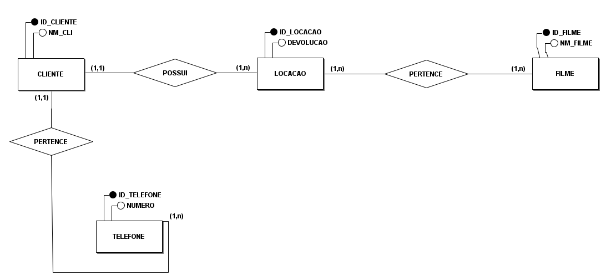
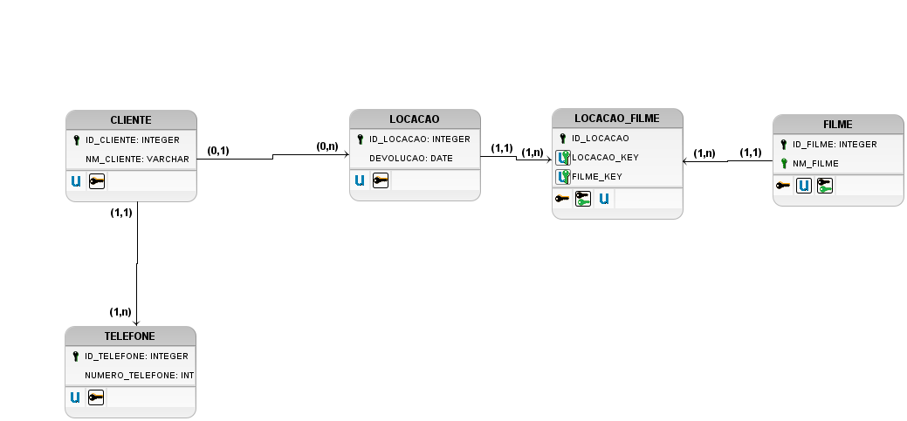

Banco de Dados
O que é um banco de dados?
Um banco de dados é uma coleção organizada de dados que são armazenados e gerenciados eletronicamente. Eles permitem o armazenamento estruturado e recuperação de dados, sendo essenciais para sistemas de informação que precisam acessar e manipular dados de forma eficiente.
Bancos de Dados Relacionais
Os bancos de dados relacionais organizam dados em tabelas, que se relacionam entre si por meio de chaves primárias e estrangeiras. Este modelo segue uma estrutura rígida e é ideal para aplicações que exigem consistência e integridade dos dados. Exemplo: MySQL, PostgreSQL.
Bancos de Dados Não Relacionais
Os bancos de dados não relacionais (NoSQL) são mais flexíveis e não utilizam tabelas para armazenar dados. Eles são ideais para grandes volumes de dados sem estrutura fixa, como documentos e dados não estruturados. Exemplo: MongoDB, Cassandra.
Diagrama Conceitual (DER)
O Diagrama de Entidade-Relacionamento (DER) é uma representação gráfica que mostra as entidades de um banco de dados e os relacionamentos entre elas. Esse diagrama é importante na fase inicial de modelagem para definir o escopo e os principais elementos do banco de dados.
Diagrama Lógico (MER)
O Diagrama de Modelo Entidade-Relacionamento (MER) é uma evolução do DER, detalhando as entidades e seus atributos, bem como os tipos de relacionamentos. Ele serve como uma ponte entre a modelagem conceitual e a implementação física do banco de dados.
Diagrama DER do Exercício
Abaixo, apresentamos o Diagrama Entidade-Relacionamento (DER) de exemplo, demonstrando como as entidades estão relacionadas:
Diagrama MER do Exercício
Abaixo, apresentamos o Diagrama Modelo Entidade-Relacionamento (MER) de exemplo, com detalhamento dos atributos:
Quais bancos de dados a ByteCafe utiliza?
A ByteCafe trabalha com uma variedade de bancos de dados, escolhidos conforme as necessidades dos projetos. Entre eles, incluem-se:
- MySQL
- PostgreSQL
- MongoDB
- SQLite
- Cassandra
O que é um dicionário de dados?
O dicionário de dados é um documento que descreve os dados armazenados em um banco de dados. Ele inclui informações sobre os nomes dos campos, tipos de dados, restrições e descrições. O dicionário é fundamental para garantir a clareza e consistência no uso dos dados durante o desenvolvimento e manutenção do sistema.